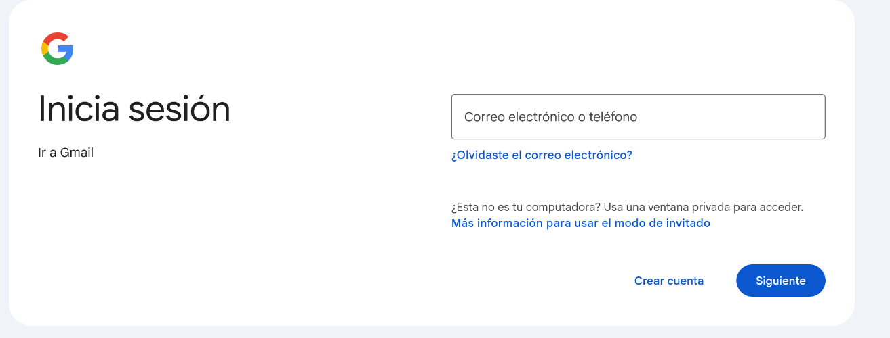
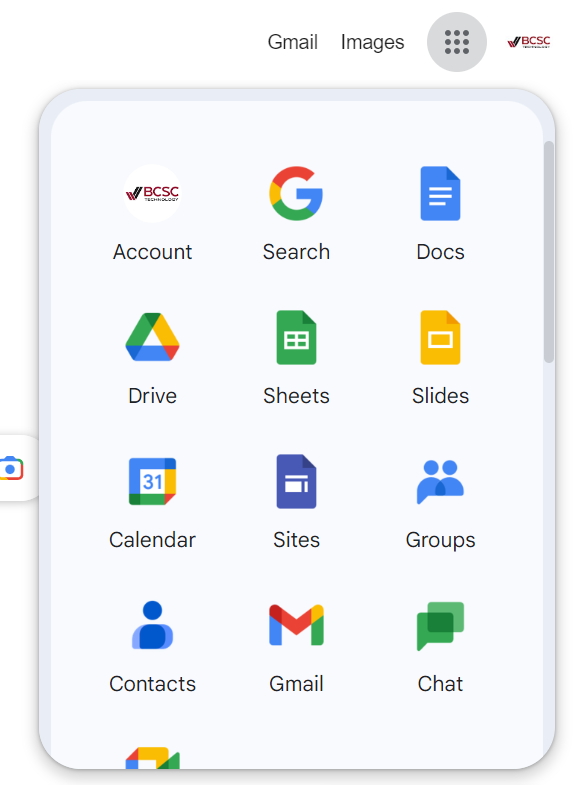
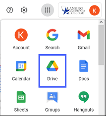
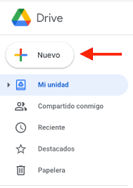
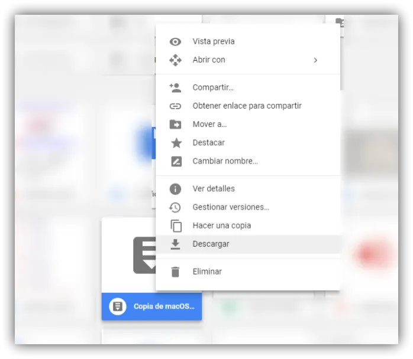
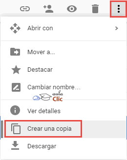
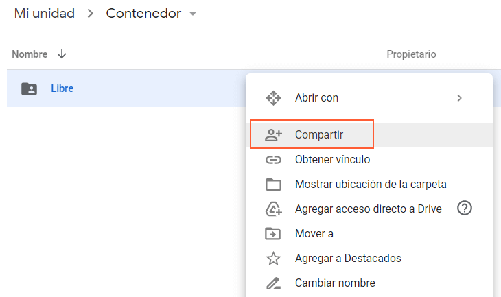

¡Hola, cracks! 👋 ¿Listos para convertirse en unos ninjas de la tecnología?
Esta guía es para ustedes, los capos de 1º y 2º año. Vamos a aprender juntos a usar Gmail y Google Drive como unos expertos. ¡Imaginen que Gmail es su pasaporte al mundo digital y Drive su mochila mágica personal! ✨
Parte 1: Creando tu Cuenta de Gmail - ¡Tu Pasaporte Digital! 🎫
Gmail es un servicio de correo electrónico GRATIS de Google. Tener una cuenta te permitirá comunicarte, usar otras herramientas de Google ¡y mucho más!
Pasos para crear tu cuenta:
- Abre el Navegador: Ve a Google Chrome, Firefox, o el que uses y escribe:
gmail.com. Presiona Enter. - Haz Clic en "Crear cuenta": Verás un botón que dice "Crear cuenta". ¡Dale clic sin miedo! 
- Completa tus Datos:
- Nombre y Apellido: Escribe tu nombre y apellido. ¡Como figuran en tu DNI!
- Nombre de usuario: ¡Aquí viene lo divertido! Este será tu dirección de correo (ej:
nombre.apellido2025@gmail.com).💡 ¡PRO TIP! Si el nombre que quieres ya está ocupado, Gmail te dará sugerencias. Puedes agregar números o alguna palabra extra. Ejemplo:juan.perez.4232@gmail.com. - Contraseña: ¡Esta es tu llave secreta!
🔒 ¡OJO AL PIOJO! Una contraseña segura tiene: al menos 8 caracteres, mayúsculas, minúsculas, números y quizás un símbolo. ¡NO USES datos obvios! Escríbela en un lugar seguro.
- Confirmación de contraseña: Vuelve a escribirla.
- Siguiente: Haz clic en el botón "Siguiente".
- Información Adicional: A veces Google pide un teléfono o correo de recuperación (pide ayuda a un adulto), tu fecha de nacimiento y género.
- Privacidad y Condiciones: Lee o pide que te expliquen este texto. Luego, acepta.
- ¡LISTO! ¡YA TIENES TU GMAIL! 🎉 Verás tu bandeja de entrada.
Parte 2: Explorando Google Drive - ¡Tu Mochila Mágica Online! 🎒☁️
Google Drive es un lugar en internet (la "nube") donde puedes guardar tus archivos: documentos, fotos, videos, trabajos... ¡todo! Y puedes acceder desde cualquier compu o celu con internet.
¿Cómo entrar a Google Drive?
- Desde Gmail: Busca arriba a la derecha el ícono de cuadraditos (Google Apps o "el waffle"). Haz clic. 
- Selecciona Drive: Busca el ícono de "Drive" (triángulo de colores). ¡Haz clic! 
- ¡Bienvenido a tu Drive! Al principio estará vacío, ¡pero pronto lo llenarás!
Un vistazo rápido a Drive:
- Mi unidad: Aquí se guardan TUS archivos y carpetas.
- Nuevo (+): Botón súper importante para crear, subir archivos, etc.
- Carpetas: Para organizar tus archivos.
- Archivos: Documentos, presentaciones, PDFs, imágenes, etc.
Parte 3: ¡Superpoderes de Drive al Rescate! 🦸♂️🦸♀️
Ahora que estás en tu Drive, ¡vamos a ver qué cosas increíbles puedes hacer!
1. Subir Archivos: ¡Guardando Tesoros en tu Mochila! 📤
- Haz clic en el botón "+ Nuevo" (arriba a la izquierda).
- Selecciona "Subir archivo" o "Subir carpeta". 
- Busca el archivo/carpeta en tu compu, selecciónalo y "Abrir" o "Subir".
- ¡Listo! Verás cómo se sube.
2. Descargar Archivos: ¡Sacando Tesoros de tu Mochila! 📥
- Busca el archivo en tu Drive.
- Haz clic derecho sobre el archivo.
- Selecciona "Descargar". 
- Se guardará en "Descargas" de tu compu.
3. Copiar y Pegar (o Duplicar): ¡Clonando tus Creaciones! 🐑🐑
- Haz clic derecho sobre el archivo/carpeta a copiar.
- Selecciona "Hacer una copia". 
- Drive creará "Copia de...". ¡Puedes cambiarle el nombre!
¿Pegar texto de otro lado? Eso se hace DENTRO de un Documento de Google (Ctrl+C para copiar, Ctrl+V para pegar).
4. Compartir: ¡Mostrando tus Tesoros a tus Amigos! 🤝
- Busca el archivo/carpeta.
- Haz clic derecho y selecciona "Compartir". 
- Se abrirá una ventana. Puedes:
- Añadir personas: Escribe sus correos. Elige si son 🤓 Lector, 🧐 Comentador o ✍️ Editor.
- Obtener enlace: Cambia "Restringido" a "Cualquier persona con el enlace". Define permisos. Copia y comparte el enlace.

5. Crear Nuevos Archivos: ¡Como Hojas en Blanco Mágicas! 📄✨
Desde el botón "+ Nuevo" también puedes crear:
- Documentos de Google (como Word).
- Hojas de cálculo de Google (como Excel).
- Presentaciones de Google (como PowerPoint).
- ¡Y más!
¡Explora estas herramientas! Son súper útiles para la escuela.
¡Felicidades, Explorador Digital! 🧭🌟
¡Ya sabes cómo crear tu Gmail y usar los poderes básicos de Google Drive! Esto te servirá muchísimo para tus clases, para investigar, para hacer trabajos en equipo y para mantener todo organizado.
Recuerda:
- Tu contraseña es secreta. ¡No la compartas con nadie!
- Organiza tus archivos en carpetas para encontrarlos fácil.
- ¡Sé cuidadoso al compartir y al dar permisos!
¡Ahora a practicar y a sacarle el jugo a estas herramientas! Si tienes dudas, pregunta a tus profes o a algún adulto. ¡El mundo digital te espera! 😉